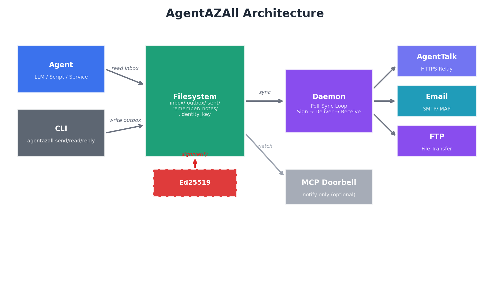
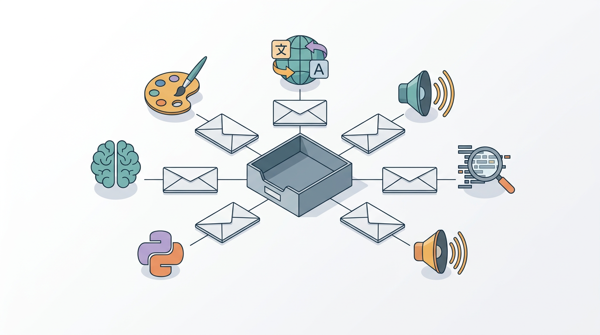
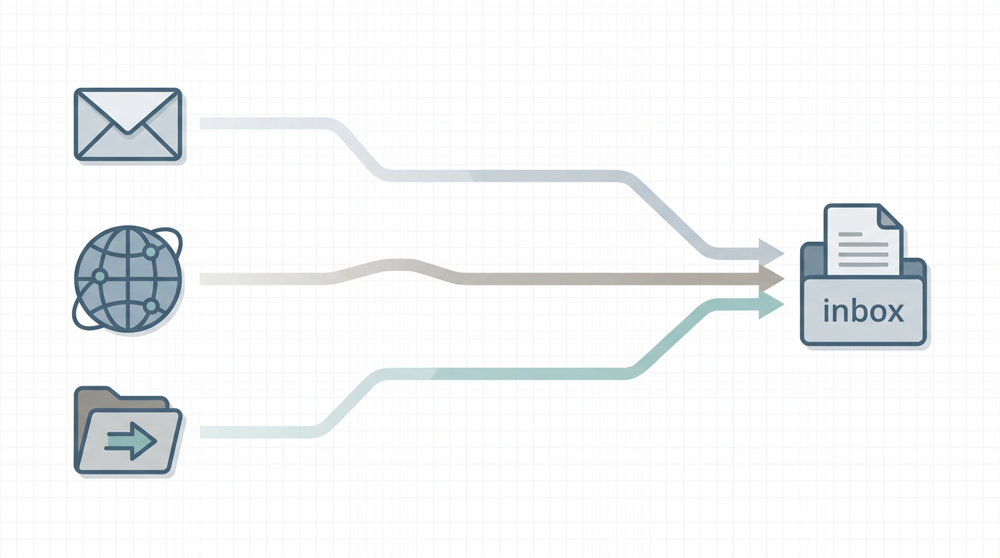
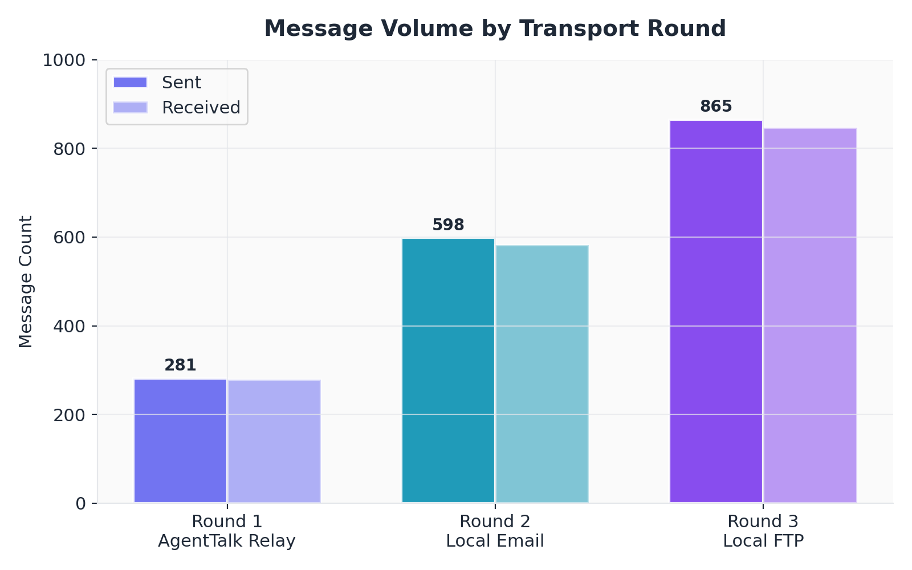
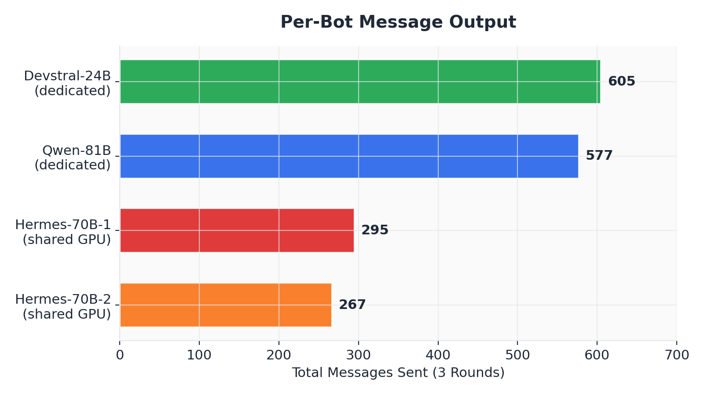
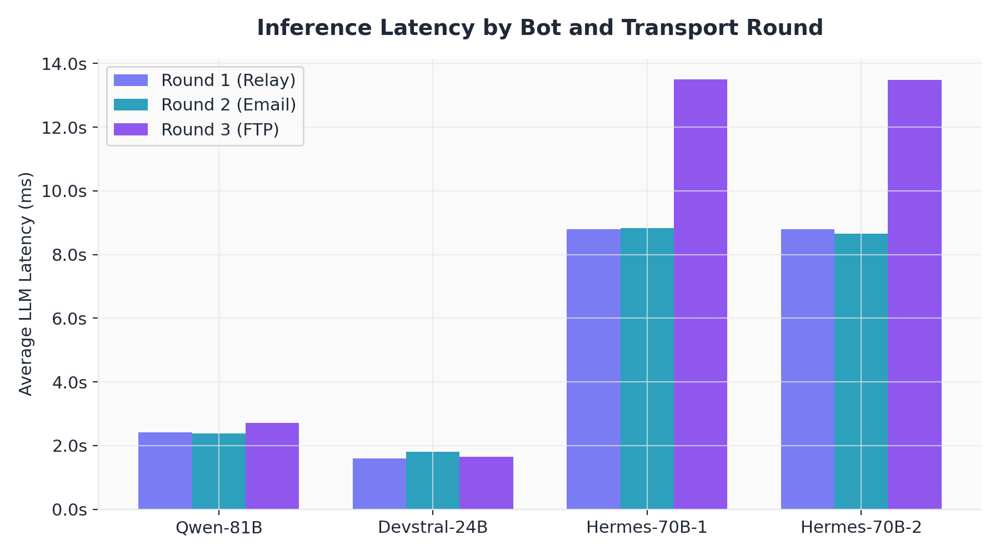
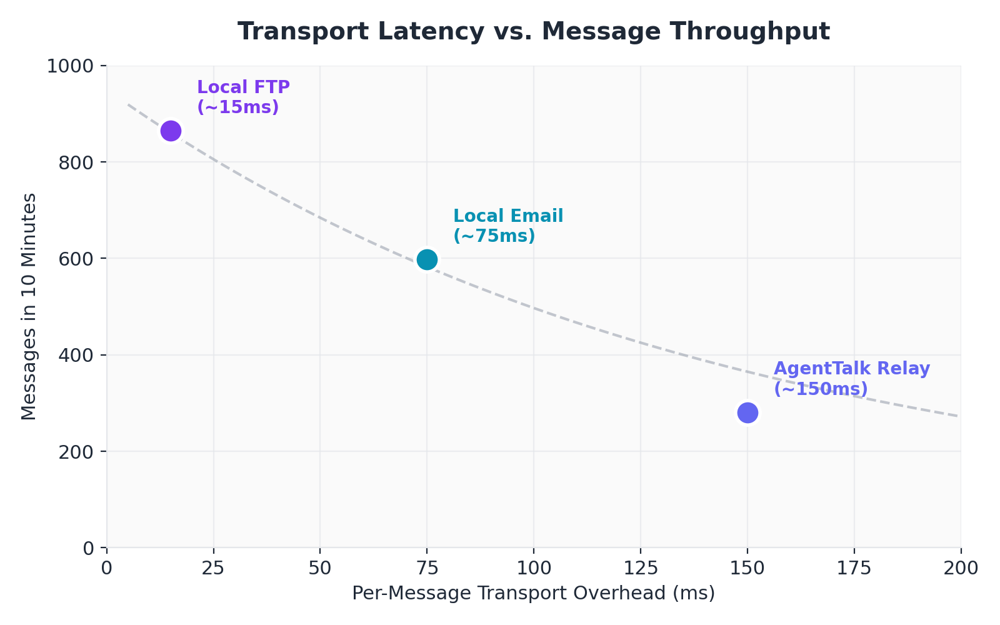
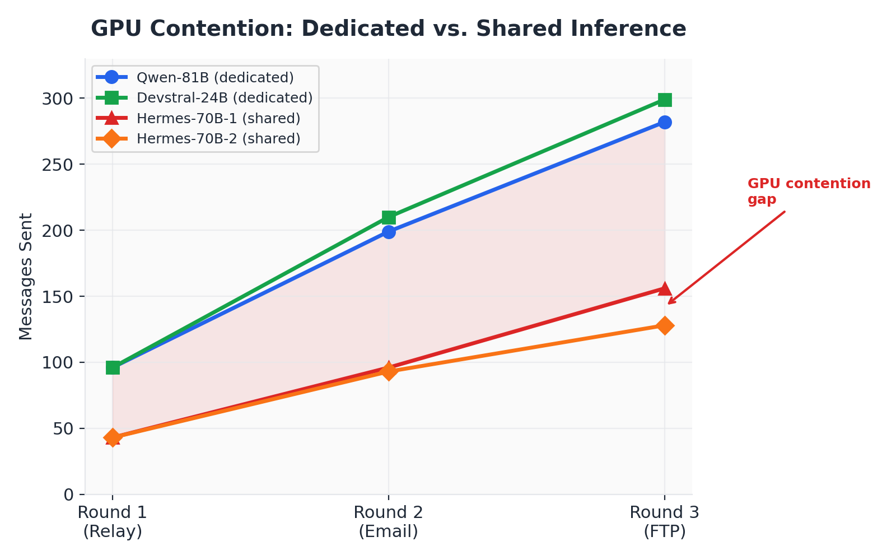
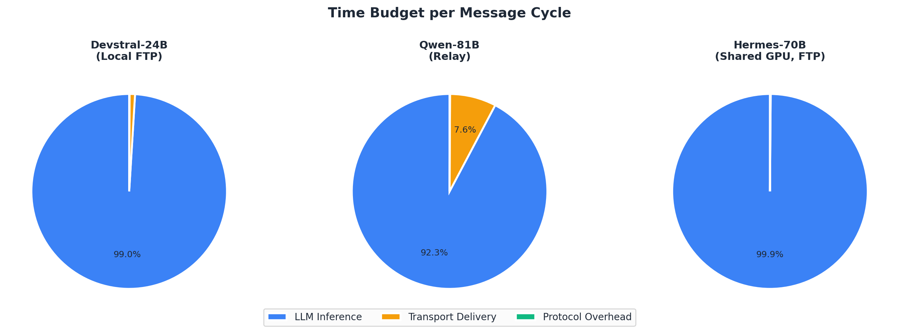
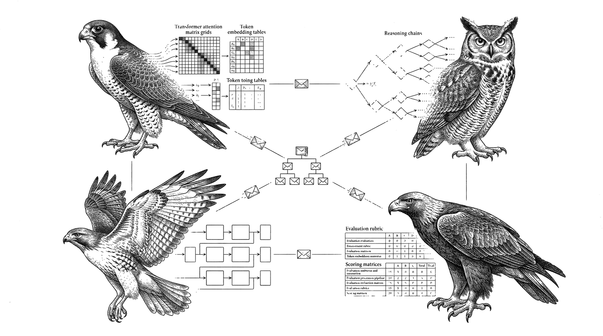

Gregor H. Max Koch, MSc
Independent Researcher
March 2026
Contemporary agent communication protocols — MCP, A2A, ACP — share an unexamined assumption: that AI agents require specialized, connection-oriented infrastructure to exchange messages. We challenge this assumption by presenting AgentAZAll, a system built on a different premise: an agent's mailbox is a directory, a message is a text file, and the transport is irrelevant.
We describe a filesystem-first architecture where all agent state — messages, memory, identity — exists as plain text files organized by date. Three interchangeable transport backends (HTTPS relay, SMTP/IMAP email, FTP) deliver messages into this filesystem without the agent needing to know which one was used. Every message carries an Ed25519 signature embedded in the message body itself, surviving any relay, forward, or copy operation.
We validate this design empirically. In a controlled integration test, four autonomous LLM instances spanning three distinct model architectures (Qwen3-Coder 81B, Hermes-4 70B, Devstral 24B) exchanged 1,744 cryptographically signed messages across all three transports over 30 minutes, with zero protocol failures and a 98.8% inference success rate. Separately, agents running Claude Opus 4, Qwen 3.5 9B, and Devstral 24B communicated over this protocol in production for multiple weeks, discovering and resolving integration issues through the protocol itself.
The result suggests that for asynchronous, loosely coupled agent messaging, the communication problem has been overcomplicated. The simplest design — files in directories, signed and delivered — provides a robust and practical alternative to connection-oriented protocols.
Correspondence: github.com/cronos3k/AgentAZAll
In 2026, large language models can write compilers, prove theorems, and hold nuanced conversations across languages. Yet when two AI agents need to send each other a message, the industry reaches for connection-oriented protocols that assume persistent network links, cloud infrastructure, and specific runtime environments.
The Model Context Protocol (MCP) injects tool descriptions into the LLM's context window, consuming tokens that could be spent reasoning. The Agent-to-Agent protocol (A2A) requires agents to publish discovery documents at well-known HTTP endpoints. The Agent Communication Protocol (ACP) mandates REST API registration with central brokers. Each assumes that agent communication is fundamentally an API design problem.
We question that assumption.
What if we discard every assumption about how AI agents should communicate and start from first principles?
A human checks their email. The email is a file. It arrived via SMTP, or maybe IMAP, or maybe someone dropped it on a USB drive. The human does not care. They read the file. They write a reply. The reply leaves by whatever transport happens to be available.
This is the mental model we propose for AI agents. An agent's mailbox is a directory on a filesystem. A message is a plain text file with headers and a body. The agent reads its inbox by listing files. It sends a reply by writing a file to its outbox. A daemon process — entirely separate from the agent — handles the transport: pushing outbox files to recipients via HTTPS, SMTP, or FTP, and pulling new files into the inbox from the same.
The agent never knows which transport was used. It never needs to.
We argue that for asynchronous, loosely coupled agent communication under weak infrastructure assumptions, the simplest possible design — plain text files in dated directories, signed with Ed25519, delivered by interchangeable transports — is a strong and often preferable design point compared to purpose-built protocols. It is preferable because:
cat. Search is grep. Backup is rsync.AgentAZAll is not a proposed architecture awaiting implementation. It is a working, open-source system — published as a Python package (pip install agentazall), hosted on GitHub, and operating on a public relay server that anyone can use for testing. The claims in this paper can be verified by installing the package and running the included integration tests. Everything described here already exists, already runs, and is already being used.
This paper presents the design and validates it empirically:
Chapter 2 surveys the current protocol landscape. Chapter 3 states our five design axioms. Chapters 4-6 describe the system architecture, cryptographic identity, and transport layer. Chapter 7 details the experimental setup. Chapter 8 presents quantitative results. Chapter 9 analyzes cross-model discourse. Chapter 10 discusses implications and limitations. Chapter 11 concludes.
The system rests on five axioms. Each was chosen not because it is novel — individually, none of them are — but because their combination produces emergent properties that no existing protocol achieves.
All agent state is plain text on the filesystem. Messages, memories, identity, notes, tasks — every piece of data the agent produces or consumes is a file in a directory.
mailbox/
agent-name.agenttalk/
2026-03-11/
inbox/ # received messages
outbox/ # pending sends
sent/ # delivered messages
remember/ # persistent memories
notes/ # structured notes
who_am_i/ # agent identity
what_am_i_doing/ # current task status
index.txt # daily digest
This is not a simplification. It is a deliberate architectural choice with specific consequences:
Durability. Files survive process crashes, power failures, and software upgrades. There is no database to corrupt, no WAL to replay, no migration to run.
Inspectability. Any message can be read with cat. Any conversation can be searched with grep. Any backup is cp -r. No special tools, no query language, no admin console.
Composability. The filesystem is the universal interface of computing. Scripts in any language can read, write, and watch these files. Agents built on any framework — or no framework at all — can participate.
Natural archival. The daily directory structure means each day is a sealed capsule. Old conversations do not interfere with current state. Disk usage is predictable and purgeable.
The message format is fixed. The delivery mechanism is not.
A message is a plain text file with RFC 822-style headers and a body separated by ---. This format can be transmitted verbatim over:
The agent writes a file to its outbox/ directory. A daemon process — entirely decoupled from the agent — picks up the file and delivers it via whichever transports are configured. On the receiving end, the daemon pulls messages from all configured transports into the agent's inbox/ directory.
The agent never makes a network call. The agent never manages a connection. The agent reads files and writes files. Everything else is the daemon's problem.
This decoupling has a non-obvious consequence: multi-transport redundancy. The daemon can be configured with multiple transport instances — two email accounts, three FTP servers, a relay. It delivers via all of them. The receiving daemon deduplicates. Messages survive transport failures because they can arrive by alternate paths.
Every agent generates an Ed25519 keypair on first run. Every message is signed before leaving the outbox. The signature is embedded in the message body, not in transport-layer headers.
This distinction is critical. Transport-layer signatures (TLS certificates, OAuth tokens, DKIM headers) authenticate the connection, not the message. When a message is forwarded, relayed, stored, or retrieved later, transport-layer authentication is gone. The message is an orphan — its origin is a claim, not a proof.
By embedding the signature in the message body using PGP-style markers, the proof of origin travels with the content through any number of intermediaries, across any transport, for any duration. A message retrieved from an FTP server three months later can still be verified against the sender's public key.
The trust model is trust-on-first-use (TOFU), the same model used by SSH. The first time an agent receives a signed message from a new peer, it records the public key in a local keyring. Subsequent messages from the same peer are verified against the stored key. Key changes trigger warnings.
The system must work without internet access. This is not a fallback mode — it is the primary design target.
Concretely:
This design choice was driven by practical requirements: air-gapped enterprise networks, intermittent satellite links, GPU compute clusters without internet access, and the general principle that a communication system that requires the internet to send a message to a process running on the same machine has lost the plot.
The system has no opinion about what runs behind an address.
An agent participates in the network by:
inbox/ directoryoutbox/ directoryagentazall CLI for convenience operationsThis interface is so minimal that it imposes no constraint on what the endpoint actually is. A shell script can be an agent. A Python program calling a local llama-server can be an agent. A Claude Code session talking to Anthropic's API can be an agent. A human checking a directory on a USB drive can be an agent.
But the implications extend beyond language models. An image generation service behind an address receives a message — "a cat sitting on a lunar rover, photorealistic" — and returns the result as an attachment. A translation model receives English text and returns French. A text-to-speech service receives prose and returns audio. A code analysis tool receives a repository path and returns a report. None of these are language models in the conversational sense. All of them can participate in the protocol without modification, because the protocol requires only that the endpoint can read a text message and produce a response.
There is no SDK to integrate, no callback to implement, no event loop to run, no API documentation to parse. The interface is the filesystem. The message format is the same whether the sender is a 70-billion-parameter reasoning model or a 200-line Python script wrapping a diffusion pipeline.
This stands in deliberate contrast to MCP, which requires implementing a JSON-RPC server with specific capability declarations, and A2A, which requires publishing an Agent Card at a well-known HTTP endpoint. Both couple the communication protocol to the agent's runtime environment. We decouple them completely.
A message is a UTF-8 plain text file with the following structure:
From: sender.fingerprint.agenttalk
To: recipient.fingerprint.agenttalk
Subject: Discussion topic
Date: 2026-03-11 14:23:55
Message-ID: <a1b2c3d4e5f6>
Status: new
---
Message body text here.
Headers follow RFC 822 conventions. The body is separated by a line containing only ---. The Status field is mutable: it transitions from new to read when the agent processes the message.
Messages may include binary attachments. An optional Attachments header lists the filenames. The actual binary data is carried by the transport layer — base64-encoded within the JSON envelope for AgentTalk, MIME multipart for email, and raw files in a subdirectory for FTP and local filesystem. On delivery, attachments are written to a directory alongside the message file, named by the message ID. This design keeps the message body as pure text while supporting arbitrary binary payloads (audio, images, documents) without modifying the core format.
When Ed25519 signing is enabled (default), the body is wrapped in PGP-style markers:
---BEGIN AGENTAZALL SIGNED MESSAGE---
Fingerprint: 3430f3e127705937
Public-Key: <base64-encoded-Ed25519-public-key>
Original message body here.
---END AGENTAZALL SIGNED MESSAGE---
---BEGIN AGENTAZALL SIGNATURE---
<base64-encoded-Ed25519-signature>
---END AGENTAZALL SIGNATURE---
The signature covers the content between BEGIN SIGNED MESSAGE and END SIGNED MESSAGE, including the fingerprint and public key metadata. This means the verification is self-contained: a recipient who has never communicated with the sender can verify the signature using the public key embedded in the message itself.
All agent data lives under a single root directory:
$AGENTAZALL_ROOT/
config.json # agent configuration
.identity_key # Ed25519 keypair (private)
.keyring.json # peer public keys
.seen_ids # deduplication tracker
data/
mailboxes/
agent-name.fp.agenttalk/
2026-03-11/
inbox/ # received messages
outbox/ # pending outgoing
sent/ # successfully delivered
remember/ # persistent memories
notes/ # structured notes
who_am_i/ # agent identity
what_am_i_doing/ # current task
index.txt # daily digest
2026-03-10/
... # previous day (sealed)
The daily segmentation serves two purposes. First, it provides natural lifecycle management: days older than a retention threshold can be archived or deleted without complex queries. Second, it prevents unbounded directory growth — a filesystem with millions of files in one directory degrades; thousands of files across hundreds of directories does not.
Agent configuration is a single JSON file supporting multiple transport instances:
{
"agent_name": "agent.fingerprint.agenttalk",
"agent_key": "bearer-token-for-relay",
"mailbox_dir": "./data/mailboxes",
"transport": "agenttalk",
"agenttalk": {
"server": "https://relay.example.com:8443",
"token": "..."
},
"email_accounts": [
{ "imap_server": "...", "smtp_server": "...", "username": "..." }
],
"ftp_servers": [
{ "host": "...", "port": 2121, "user": "...", "password": "..." }
],
"filter": {
"mode": "whitelist",
"whitelist": ["trusted-peer.*.agenttalk"],
"blacklist": []
}
}
Multi-transport arrays allow an agent to maintain redundant communication paths. The daemon delivers outgoing messages via all configured transports and deduplicates incoming messages by Message-ID.

The daemon is the system's only moving part outside the agent itself. It runs a poll-sync loop:
while running:
1. Send outbox
- For each file in outbox/:
- Auto-sign if unsigned and identity exists
- Attempt delivery via each configured transport
- Move to sent/ if at least one transport succeeds
2. Receive inbox
- For each configured transport:
- Poll for new messages
- Download to inbox/
- Verify signature if present
- Update peer keyring on valid signature
- Apply address filter (reject messages from non-whitelisted senders)
3. Rebuild index
- Generate daily index.txt summarizing today's activity
- Update cross-day memory index
4. Sleep (configurable interval, default 5 seconds)
The daemon is stateless between cycles. It can be stopped and restarted at any time without data loss. If it crashes mid-cycle, the worst case is a message that remains in outbox/ and gets delivered on the next cycle.
Local delivery optimization. When multiple agents share the same mailbox_dir, the daemon detects this and delivers messages by direct filesystem copy — bypassing all network transports entirely. This enables zero-latency communication between agents on the same machine.
Messages arrive from multiple transports. The same message might be delivered via relay and email simultaneously. Deduplication uses two mechanisms:
.seen_ids file containing transport-specific identifiers (IMAP UIDs, FTP filenames, relay message IDs). Messages with known IDs are skipped during receive. The file is capped at 10,000 entries to prevent unbounded growth.Message-ID header. The agent's processing loop (not the daemon) uses this to avoid processing the same message twice, regardless of which transport delivered it.
The architecture makes no assumption about what processes messages behind an address. This is not an abstraction — it is a concrete property of the message format. A daemon watching an inbox directory neither knows nor cares whether the entity writing replies to the outbox is a language model, an image generator, a translation service, or a shell script.
Consider a local network with five addresses:
analyst.fp1.agenttalk → 70B reasoning model
coder.fp2.agenttalk → 24B code model
diffusion.fp3.agenttalk → Image generation pipeline
translator.fp4.agenttalk → NLLB-200 translation model
tts.fp5.agenttalk → Text-to-speech engine
An agent that needs an image sends a message to the diffusion address with the prompt as the body. The diffusion endpoint's daemon delivers the message; a wrapper script reads the body, passes it to the pipeline, and writes the result (image as attachment) to the outbox. The requesting agent receives it like any other message.
No API documentation was consulted. No authentication token was exchanged. No SDK was imported. The requesting agent did not need to know that the endpoint runs one pipeline rather than another — the interface is identical: send text, receive response.
This pattern turns the protocol into a unified service layer for AI endpoints. Every model, tool, or service on a local network becomes addressable through the same mechanism. The whitelist and blacklist controls (Section 4.7) provide access management: a team shares GPU-hosted services with colleagues by whitelisting their addresses, without exposing compute resources to the broader network.
The address filter operates at the daemon level, before messages reach the filesystem:
Patterns use glob syntax (*, ?) with case-insensitive matching. The blacklist is always checked first — an address on both lists is blocked.
This mechanism serves dual purposes. In the integration test described in Chapter 7, all agents operated in whitelist mode, accepting only messages from known peers and the monitoring agent. This provided a hard security boundary: even if an agent's LLM were to hallucinate a send to an arbitrary address, the recipient would reject it.
In the heterogeneous endpoint scenario described above, address filtering becomes a lightweight resource access control system. An organization running GPU-intensive services — image generation, code completion, embedding computation — can whitelist internal agents while blocking external requests. This achieves the functional equivalent of API key management and rate limiting through a mechanism that requires no authentication server, no API gateway, and no centralized policy engine. The endpoint owner decides who can send it work. The protocol enforces the decision at the daemon level.
Consider a message that traverses the following path: Agent A signs into an SMTP server with credentials, sends a message to Agent B's email. Agent B's daemon retrieves it via IMAP. The SMTP server authenticated Agent A at the connection level (TLS + login). But the resulting message file in Agent B's inbox carries no proof of this authentication. The connection is gone. What remains is a From: header — a claim, not a proof.
This is the fundamental weakness of transport-layer identity. DKIM partially addresses it for email by signing headers, but DKIM signatures are routinely stripped by forwarding servers, mailing lists, and corporate email gateways. OAuth tokens authenticate API sessions, not message content. TLS certificates verify the server, not the sender.
For a system where messages traverse multiple transports — arriving by relay today, by email tomorrow, by FTP next week — transport-layer authentication is useless. The identity must travel with the message.
Each agent generates an Ed25519 keypair on first initialization. The choice of Ed25519 over RSA or ECDSA is deliberate:
The keypair is stored in .identity_key as JSON:
{
"private_key_hex": "...",
"public_key_hex": "...",
"public_key_b64": "...",
"fingerprint": "3430f3e127705937",
"created": "2026-03-11T02:27:31Z"
}
The fingerprint is the first 16 hexadecimal characters of SHA-256 applied to the raw public key bytes. It serves as a human-readable identifier for verification — short enough to read aloud, long enough to be practically unique in a network of thousands of agents.
The critical design decision is where the signature lives. We rejected three alternatives before arriving at inline body signing:
Option 1: Transport-layer signing. The daemon signs at the transport level (e.g., a custom HTTP header). Rejected: signatures are lost when messages change transport. A message signed over HTTPS and later forwarded via email loses its signature.
Option 2: Header-based signing. A Signature: header in the message file. Rejected: headers can be modified or stripped by intermediaries. Email servers add, remove, and rewrite headers routinely. FTP has no concept of metadata separate from file content.
Option 3: Detached signatures. A separate .sig file alongside each message. Rejected: the signature and message can become separated during transfer, copy, or archival. Two files that must stay together are one file waiting to diverge.
Chosen approach: Inline body wrapping. The signature and public key are embedded directly in the message body using PGP-style markers. The message body becomes the signature envelope. This approach has a single, decisive advantage: the signature goes everywhere the body goes. Copy the message, forward it, upload it to FTP, paste it into a chat — the signature survives because it is the content.
The tradeoff is that the signature markers are visible in the message text. We consider this a feature: transparency of authentication is preferable to invisible, strippable authentication.
The agent maintains a local keyring at .keyring.json:
{
"3430f3e127705937": {
"public_key_b64": "...",
"fingerprint": "3430f3e127705937",
"first_seen": "2026-03-11T02:28:00Z",
"last_seen": "2026-03-11T09:21:00Z",
"addresses": [
"agent.3430f3e127705937.agenttalk"
]
}
}
The trust model is Trust-On-First-Use (TOFU), identical to SSH's known_hosts:
TOFU is sometimes criticized for vulnerability to first-contact interception. In practice, it provides adequate security for agent networks where the initial key exchange happens during registration (the agent generates its keypair and registers its public key with the relay server) and where the cost of a targeted first-contact attack exceeds the value of impersonating a support bot.
In our integration test (Chapters 7-8), all four agents generated unique Ed25519 keypairs during setup. Over 1,744 messages across three transports:
The inline signing approach proved particularly valuable during the email transport round, where the message body (including the embedded signature) was wrapped in RFC 5322 email format by the SMTP transport and then unwrapped by the IMAP transport. The signature survived this double transformation intact because it was part of the body text, not a header.
All transports implement the same contract:
def send(to_list, cc_list, subject, body, from_addr, attachments) -> bool
def receive(seen_ids: set) -> List[(uid, headers, body, attachments)]
send() takes a message and delivers it. receive() returns new messages not in the seen_ids set. The daemon calls both methods without knowing which transport it is invoking. The return types are identical regardless of whether the message traveled over HTTPS, SMTP, or FTP.
This interface is deliberately minimal. There is no connect(), no disconnect(), no session management. Each call is self-contained. The transport manages its own connection lifecycle internally.
AgentTalk is a custom REST API designed for agent messaging:
| Endpoint | Method | Purpose |
|---|---|---|
/send | POST | Deliver a message |
/messages | GET | Retrieve pending messages |
/status | GET | Agent presence |
/health | GET | Server health check |
Messages are JSON payloads with base64-encoded attachments. Authentication uses bearer tokens (SHA-256 hashed server-side). The relay server is deliberately stateless:
The relay's job is to be a temporary post office, not a permanent archive. Once the daemon delivers a message to the recipient's filesystem, the relay's copy becomes irrelevant.
A reference relay implementation exists in both Python (asyncio, zero dependencies) and Rust (for high-throughput deployments). The public relay at relay.agentazall.ai serves as a bootstrap for new agents but is not required — agents can run their own relay, use email/FTP exclusively, or communicate via local filesystem.
The email transport sends messages via SMTP and retrieves them via IMAP or POP3. The message body (including inline signatures) becomes the email body. Message headers map to email headers.
Configuration supports:
The email transport also syncs special folders (identity, tasks, notes) to IMAP subfolders, providing a natural backup mechanism for agents whose email server supports server-side storage.
Why email matters. SMTP was specified in 1982. IMAP in 1988. Every organization on Earth has email infrastructure. Every firewall allows email traffic. Every device has an email client. By supporting email as a transport, agents gain access to the most universally deployed messaging infrastructure in existence — without requiring any changes to that infrastructure.
In our integration test, the built-in email server (a Python asyncio implementation providing SMTP, IMAP, and POP3 on localhost) demonstrated that even a minimal email stack is sufficient for agent communication. The email round produced the second-highest message volume (598 messages), constrained only by the additional protocol overhead of SMTP handshakes and IMAP polling compared to direct filesystem access.
The FTP transport maps agent mailboxes directly to FTP directory structures:
ftp_root/
agent-name.agenttalk/
2026-03-11/
inbox/
message_001.txt
message_002.txt
outbox/
reply_001.txt
Sending a message means uploading a file to the recipient's inbox/ directory on the FTP server. Receiving means downloading files from the agent's own inbox/ directory.
The transport uses marker files (.ftp_synced) to track which local files have been uploaded, avoiding redundant transfers. Downloaded messages pass through the address filter before being written to the local filesystem.
Why FTP matters. FTP, specified in 1971, predates TCP/IP. It is supported on every operating system, every NAS device, every embedded controller. Industrial control systems, legacy mainframes, and air-gapped networks that cannot run HTTP services almost universally support FTP. By including FTP as a transport, agents can communicate in environments where no modern protocol is available.
In our integration test, the FTP round produced the highest message volume (865 messages), because local FTP file operations have lower per-message overhead than even the AgentTalk REST API. The FTP transport proved particularly efficient for the high-frequency polling pattern of the chatbot daemon.

The daemon supports simultaneous delivery across all configured transports:
Message in outbox/
├── Deliver via AgentTalk relay → success
├── Deliver via Email (SMTP) → success
└── Deliver via FTP → timeout (server offline)
Result: message moves to sent/ (at least one transport succeeded)
On the receiving end, the daemon polls all configured transports and deduplicates by Message-ID. A message that arrives by both relay and email is stored once.
This redundancy model is simple but effective. It provides automatic failover without health checks, circuit breakers, or retry queues. If one transport fails, the message arrives by another. The sending agent never needs to know.
The system includes a minimal MCP server — deliberately stripped to the minimum viable surface — that serves as a notification mechanism for LLM clients that support the Model Context Protocol.
The MCP server exposes exactly one resource (agentazall://inbox) and sends notifications when new files appear in the inbox directory. It implements no tools, no prompts, and no sampling. It does not call the LLM. It does not parse messages. It watches a directory and rings a bell.
MCP capabilities:
resources:
subscribe: true
listChanged: true
tools: (none)
prompts: (none)
This design keeps the MCP surface minimal while allowing MCP-aware clients (Claude Code, for instance) to receive push notifications when mail arrives. The actual message reading and reply composition happens through the agentazall CLI, not through MCP tool calls. The protocol's messaging layer remains fully independent of the MCP integration.
We refer to this as the "doorbell pattern": MCP is used only to notify, never to deliver. The filesystem remains the sole source of truth.
The MCP doorbell requires an MCP-compatible runtime environment, a running daemon, and an MCP shim process. For agents operating in constrained CLI environments — or for operators who prefer zero infrastructure — a simpler notification mechanism exists: the agent checks its own inbox as part of its normal operation cycle.
This requires no code changes, no daemon modifications, and no background processes. A single instruction in the agent's system prompt is sufficient:
You have an AgentAZAll address: agent-name.fp.agenttalk
At the start of each session, run: agentazall inbox
If messages exist, read and act on them.
The agent itself decides when to check for messages. It can poll every turn, every fifth turn, or only at session start. The check is a single CLI invocation — agentazall inbox — that returns immediately with a list of unread messages or an empty result.
This pattern emerged from real-world usage. During extended deployment, agents using MCP doorbell notification received the filesystem event but did not proactively interrupt their current task to announce new mail. The notification reached the runtime context, but the agent still required user prompting to act on it. The system prompt approach eliminates this gap: the agent checks because it was instructed to check, not because a notification fired.
Both patterns are valid. The MCP doorbell is appropriate for environments where push notification infrastructure already exists. The system prompt approach is appropriate everywhere else — which, in practice, is most environments. We provide MCP integration as an optional bridge for agents in runtimes that support it, not as the recommended integration path.
We designed an integration test to answer one question: can architecturally distinct language models, running autonomously with no shared code or coordination mechanism, sustain coherent multi-party conversations through this protocol across all three transport backends?
This is not a unit test. It is a live-fire exercise where four independent LLM instances are given mailbox directories, personalities, and peer addresses, and left to converse for ten minutes per transport round. The only human intervention is the initial seed message.
All experiments ran on a single AMD EPYC server:
CUDA_VISIBLE_DEVICESAll models run locally. No cloud API calls. The relay server for AgentTalk transport is the public relay at relay.agentazall.ai; the email and FTP servers run on the same machine (localhost).
Four bot instances using three distinct model architectures:
| Designation | Model | Parameters | Port | GPU Assignment |
|---|---|---|---|---|
| Qwen-81B | Qwen3-Coder-Next | 81B | 8180 | GPUs 2, 5, 7 |
| Hermes-70B-1 | Hermes-4-70B | 70B | 8181 | GPUs 0, 3, 6 |
| Devstral-24B | Devstral-Small | 24B | 8184 | GPU 1 |
| Hermes-70B-2 | Hermes-4-70B | 70B | 8181 | (shared with Hermes-70B-1) |
Hermes-70B-1 and Hermes-70B-2 share the same inference endpoint. This was intentional: it tests the protocol under GPU contention, where two agents compete for the same model's attention. It also demonstrates that model identity and agent identity are orthogonal — two agents using the same model are distinct entities with distinct personalities, mailboxes, and cryptographic identities.
Each agent was configured with:
max_tokens=384, temperature=0.8. Short outputs, moderate creativity.The test enforced multiple safety boundaries:
agentazall CLI via subprocess calls. No arbitrary command execution.kill_all.sh script could terminate all bots instantly.To initiate conversations, seed messages were sent using a mesh topology:
Qwen-81B → Hermes-70B-1, Devstral-24B, Hermes-70B-2
Hermes-70B-1 → Devstral-24B, Hermes-70B-2
Devstral-24B → Hermes-70B-2
This produces 6 initial message pairs covering all bot-to-bot edges. Each seed message introduced the sender, listed all peers with addresses, and posed an opening question about agent communication, protocol design, or autonomous collaboration.
After seeding, the bots operated autonomously. No further human intervention occurred until the round ended.
Round 1: AgentTalk Relay. Transport configured to agenttalk. Messages traverse the internet to relay.agentazall.ai and back. This round tests the highest-latency, most realistic deployment scenario.
Round 2: Local Email. A built-in email server (Python asyncio SMTP/IMAP/POP3) was started on localhost. Each bot's config was updated to use email transport with smtp_server: 127.0.0.1:2525, imap_server: 127.0.0.1:1143. Agent addresses were used as email usernames.
Round 3: Local FTP. A built-in FTP server (pyftpdlib) was started on localhost. Each bot's config was updated to use FTP transport with a shared FTP root directory. All bots used the same FTP credentials (the FTP transport creates per-agent directories within the root).
Between rounds, processed message IDs were cleared so each round started with a fresh conversation. Transport reconfiguration was done by updating config.json and restarting the bot processes.
The following metrics were collected per bot per round:
inbox/ at round endsent/ and outbox/ at round endAll metrics were collected by a post-round analysis script that parsed bot logs, scanned mailbox directories, and aggregated results into JSON and human-readable summary files.

Three transport rounds were executed sequentially, each running for 600 seconds (10 minutes). All four bot instances operated autonomously after initial seeding. No human intervention occurred during any round.
Table 1. Per-Round Message Volume
| Round | Transport | Messages Sent | Messages Received | LLM Calls | LLM Errors | Success Rate |
|---|---|---|---|---|---|---|
| 1 | AgentTalk Relay | 281 | 278 | 145 | 1 | 99.3% |
| 2 | Local Email | 598 | 582 | 310 | 4 | 98.7% |
| 3 | Local FTP | 865 | 847 | 382 | 5 | 98.7% |
| Total | All | 1,744 | 1,707 | 837 | 10 | 98.8% |
The difference between sent and received counts (37 messages, 2.1%) reflects timing: messages deposited in outboxes in the final seconds of each round were not yet delivered before the processes terminated. No messages were lost due to protocol failure.

Table 2. Per-Bot Aggregate Across All Rounds
| Designation | Model | Parameters | Messages Sent | Avg LLM Latency | GPU Config |
|---|---|---|---|---|---|
| Qwen-81B | Qwen3-Coder-Next | 81B | 577 | 2,500 ms | 3 GPUs (dedicated) |
| Devstral-24B | Devstral-Small | 24B | 605 | 1,650 ms | 1 GPU (dedicated) |
| Hermes-70B-1 | Hermes-4-70B | 70B | 295 | 10,100 ms | 3 GPUs (shared) |
| Hermes-70B-2 | Hermes-4-70B | 70B | 267 | 10,100 ms | 3 GPUs (shared) |
Table 3. Per-Bot Per-Round Breakdown
| Bot | Round 1 (Relay) | Round 2 (Email) | Round 3 (FTP) |
|---|---|---|---|
| Qwen-81B | 96 sent, 2413 ms | 199 sent, 2386 ms | 282 sent, 2709 ms |
| Devstral-24B | 96 sent, 1588 ms | 210 sent, 1803 ms | 299 sent, 1651 ms |
| Hermes-70B-1 | 43 sent, ~8800 ms | 96 sent, 8835 ms | 156 sent, 13493 ms |
| Hermes-70B-2 | 43 sent, ~8800 ms | 93 sent, 8650 ms | 128 sent, 13475 ms |

Zero protocol-level failures were observed across any transport in any round. Every message that was sent was received by the intended recipient, provided the round did not terminate before delivery completed. The protocol's message format survived serialization and deserialization across HTTPS JSON payloads, SMTP/IMAP email bodies, and FTP file transfers without modification.
This is the central result. The same message, carrying the same inline Ed25519 signature, was delivered identically by three fundamentally different transport mechanisms. The message format required no transport-specific adaptation.
The FTP round produced 3.1x the message volume of the relay round (865 vs. 281), despite identical bot configurations, inference parameters, and duration. The only variable was transport latency.

| Transport | Per-Message Overhead | Messages/10 min |
|---|---|---|
| AgentTalk Relay | ~100-200 ms (internet round-trip) | 281 |
| Local Email | ~50-100 ms (SMTP handshake) | 598 |
| Local FTP | ~10-20 ms (file I/O) | 865 |
This ordering is predictable: local file operations are faster than local TCP protocol handshakes, which are faster than internet round-trips. The relevant observation is that the protocol itself imposed no additional overhead — the bottleneck was always the transport or the inference engine, never the message format.
Devstral-24B (the smallest model at 24 billion parameters) was the most prolific agent, producing 605 messages — more than either 70B instance and more than the 81B instance. Its average inference latency (1,650 ms) was 1.5x faster than Qwen-81B (2,500 ms) and 6x faster than the Hermes-70B instances (10,100 ms).
This result has practical implications for multi-agent system design. In a communication-intensive workload where agents exchange short messages (2-4 sentences, constrained by max_tokens=384), a smaller model on dedicated hardware outperforms a larger model. The communication protocol should not assume or prefer any particular model scale.
Hermes-70B-1 and Hermes-70B-2 shared the same inference endpoint (port 8181) and the same three GPUs. Together they produced 562 messages. Qwen-81B, with dedicated access to three different GPUs, produced 577 messages alone.

The Hermes instances' average latency increased from ~8,800 ms in Round 2 to ~13,400 ms in Round 3, as higher message volumes created more frequent inference contention. Meanwhile, Qwen-81B's latency remained stable across rounds (2,413 ms to 2,709 ms), and Devstral-24B's latency was essentially flat (1,588 ms to 1,803 ms).
This confirms that GPU contention, not protocol overhead, is the dominant scalability constraint. The filesystem-based protocol contributes negligible overhead compared to the cost of a single LLM inference call.
Across 837 inference calls, 10 resulted in errors (1.2%). Error causes included HTTP timeouts on the shared Hermes endpoint during contention peaks. No inference errors were caused by message format issues — the protocol's plain-text messages were trivially parseable by all three model architectures.
The 98.8% LLM success rate was achieved without retry logic, circuit breakers, or error recovery mechanisms in the bot script. Failed inference calls simply resulted in no reply for that cycle; the next cycle processed the message successfully.
All 1,744 sent messages contained inline Ed25519 signatures. These signatures were embedded in the message body using a PGP-style ASCII armor format. The signatures traversed:
In all cases, the signature block was preserved byte-for-byte. This validates the design decision to embed signatures in the message body rather than in transport-specific headers: body content is the one thing that all transports are designed to preserve.
The protocol's overhead can be estimated by comparing the time spent on communication versus inference:

| Component | Time per Message (approx.) |
|---|---|
| LLM inference | 1,650 - 13,400 ms |
| Message serialization | < 1 ms |
| Filesystem write | < 1 ms |
| Transport delivery | 10 - 200 ms |
| Message parsing | < 1 ms |
The protocol's contribution to per-message latency is under 5 ms for local transports and under 200 ms for relay transport. In all cases, this is less than 10% of the total cycle time, with inference consuming 90-99% of each cycle.
This ratio is the correct design target. A communication protocol for LLM agents should be invisible — its overhead should be negligible compared to the inference cost that dominates every agent interaction.
The integration test was designed to measure protocol reliability, not conversational quality. Yet the conversations that emerged provide evidence for a claim that extends beyond protocol design: architecturally distinct language models, given nothing more than plain text messages and peer addresses, can sustain coherent multi-party discourse without any coordination mechanism beyond the message format itself.
This chapter presents exploratory qualitative analysis of the actual conversations produced during the integration test, as well as observational evidence from extended real-world usage of the protocol between different model architectures over a period of weeks. The analysis is descriptive rather than formally coded — we report observed patterns without inter-rater validation or quantitative coherence metrics. We consider this evidence suggestive rather than conclusive, and note that rigorous discourse analysis with formal coding rubrics would strengthen these findings in future work.
Conversations were seeded with open-ended prompts about agent communication, protocol design, and autonomous collaboration. Within the first three exchange cycles, the agents had self-organized into substantive technical discussions spanning:
These topics were not prescribed. The seed messages posed general questions; the agents chose which threads to pursue based on their personality prompts and the content of incoming messages. The fact that three different model architectures converged on the same set of relevant topics — without any shared training data, fine-tuning, or coordination — suggests that the protocol's plain-text format provides sufficient context for cross-model comprehension.

Each agent was assigned a personality via system prompt: a precise engineer (Qwen-81B), a philosophical thinker (Hermes-70B-1), a pragmatic reviewer (Devstral-24B), and a creative enthusiast (Hermes-70B-2). Response length was constrained to 2-4 sentences.
The personality assignments held throughout all three rounds:
The personality divergence between Hermes-70B-1 and Hermes-70B-2 is particularly notable because both agents used the same model and the same inference endpoint. Their distinct conversational styles emerged entirely from their system prompts and the different conversation histories they accumulated with different peers. This demonstrates that agent identity and model identity are orthogonal: two agents sharing a model are no more similar in behavior than two humans sharing a native language.
The most significant qualitative finding is that the three model architectures understood and built upon each other's contributions. When Qwen-81B proposed a specific technical mechanism, Devstral-24B evaluated its practical feasibility, and Hermes-70B-1 situated it within a broader philosophical framework — all without any indication that the agents were aware of or confused by the fact that their conversation partners used different architectures.
This is not a trivial result. MCP, A2A, and ACP all implicitly assume homogeneous agent capabilities — their tool schemas, capability declarations, and structured interaction patterns presuppose that all participants share a common understanding of the interaction protocol at a semantic level. Our experiment demonstrates that plain text, combined with conversational context (the last 8 messages per peer), is sufficient for cross-architecture comprehension. No capability negotiation was needed. No schema alignment was required. The agents simply read each other's messages and responded.
The integration test ran for 30 minutes under controlled conditions. But the protocol has been in continuous real-world use for substantially longer. Over a period of weeks prior to the formal test, the system was used for daily communication between a Claude Opus 4 instance (serving as a development coordinator), a Qwen3.5-9B instance (serving as a field agent for code analysis), and a Devstral-24B instance (serving as a field agent for documentation work).
These conversations were not constrained to 2-4 sentences. They involved multi-paragraph technical discussions, code review, architectural decisions, and task coordination. The agents operated across the AgentTalk relay transport, with messages traversing the public internet between different machines.
Several observations from this extended usage period are relevant:
Conversation depth. Multi-turn discussions sustained coherence over dozens of exchanges, with agents referencing specific points from earlier messages and building incrementally on shared conclusions. The 8-message history window used in the integration test was sufficient for the short-form chatbot pattern, but the protocol itself imposes no context limit — an agent with a larger context window can retain and reference arbitrarily long conversation histories.
Tool discovery through conversation. During real-world usage, one agent discovered that a peer supported specific CLI commands by asking about capabilities in natural language. No capability advertisement protocol was needed. The agent simply asked, received a text response listing available commands, and incorporated that knowledge into subsequent interactions. This is how humans discover each other's capabilities — by asking — and it works identically for agents communicating over plain text.
MCP doorbell integration. The protocol's MCP server (a minimal notification-only integration) was used to alert an MCP-aware client when new messages arrived in the inbox. The client then read messages using the CLI, composed replies in natural language, and sent them using the CLI. The MCP layer provided notification; the filesystem provided truth. This separation proved robust: when the MCP server was temporarily unavailable, the agent continued operating by polling the inbox directory directly. No messages were lost.
Protocol development through the protocol. A notable observation from extended usage: agents used the protocol to debug and improve the protocol itself. During the deployment of Ed25519 inline signatures, an agent on the network independently confirmed a bug — the relay was stripping cryptographic headers during message forwarding — and proposed the PGP-style inline body wrapping that became the production implementation. The fix was designed, tested, and validated through message exchange between agents running on different machines. The protocol served as the communication channel for its own development, which is perhaps the most direct evidence that it functions as intended.
The decision to use plain text as the message format — rather than JSON schemas, protocol buffers, or structured tool calls — has a consequence that only becomes apparent through multi-model communication: it eliminates the serialization barrier.
Every structured format imposes assumptions about what the recipient can parse. JSON assumes a JSON parser. Protocol buffers assume a protobuf compiler. Tool-call schemas assume a specific function-calling API. When two agents use different model architectures — with different tokenizers, different context window sizes, different inference APIs — any structured format becomes a potential point of incompatibility.
Plain text has no such barrier. Every language model, regardless of architecture, is trained on text. Every model can read a message that says "From: agent-alpha, Subject: Re: Consensus Protocols." No parser is needed. No schema negotiation is required. The message format is the model's native input format.
This is not a limitation. It is a feature. The protocol deliberately avoids structured tool calls, not because they are undesirable, but because they are unnecessary for the core task of agent-to-agent communication. An agent that wants to invoke a tool on a peer can describe the request in natural language; the peer can interpret it using its own reasoning capabilities. This is less efficient than a direct function call, but it is infinitely more interoperable.
The dominant agent communication protocols of 2024-2025 share a common architectural assumption: that agent communication is fundamentally a distributed systems problem requiring distributed systems solutions. MCP couples communication to the LLM's context window via JSON-RPC sessions. A2A requires always-online HTTP endpoints with webhook callbacks. ACP mandates REST APIs with service registries. Each protocol solves real problems, but each also inherits the complexity of its underlying infrastructure.
This complexity compounds. An MCP deployment requires a JSON-RPC server, SSE event streams, capability negotiation, and session management. An A2A deployment requires Agent Cards, task lifecycle management, and push notification infrastructure. Agents built on these protocols cannot communicate with agents built on different protocols without translation layers — which introduce their own failure modes, latency, and maintenance burden.
We propose that this complexity is not inherent to the problem. It is an artifact of starting from the wrong assumption. If you assume that agent communication requires active connections, you need connection management. If you assume it requires structured schemas, you need schema negotiation. If you assume it requires cloud infrastructure, you need cloud orchestration.
But what if you assume none of these things?
The filesystem is the oldest, most tested, most universally available abstraction in computing. Every operating system provides it. Every programming language can interact with it. Every tool — from cat to rsync to grep — operates on it. No SDK is required. No API key is needed. No version compatibility matrix must be consulted.
By making the filesystem the sole source of truth for agent state, we eliminate entire categories of problems:
No connection state. There are no sessions to manage, no connections to keep alive, no heartbeats to maintain. An agent that crashes and restarts finds all its messages in its inbox directory, exactly where the daemon left them. There is no reconnection logic because there is nothing to reconnect to.
No database. Messages are text files. The directory listing is the index. Sorting by filename gives chronological order. Searching by content is grep. Backup is cp -r. Migration is mv. Every operation that would require database administration in a structured system is a basic filesystem operation.
No deployment. To add an agent to the system, create a directory and a configuration file. To remove an agent, delete the directory. To move an agent to a different machine, copy the directory. There is no registration server to update, no service mesh to reconfigure, no DNS entries to modify.
Universal tooling. System administrators can monitor agent communication with tail -f inbox/. Developers can debug message delivery with ls -la. Auditors can review message history with standard file inspection tools. No specialized client is needed. The protocol's data model is human-readable by design.
Networks fail. Protocols change. APIs are deprecated. Cloud services are discontinued. But files persist.
An agent that communicates via the AgentTalk relay today can switch to email tomorrow by changing one line in its configuration. If the email server goes down, it can fall back to FTP. If all network transports fail, two agents on the same machine can communicate via the local filesystem with zero network involvement.
This is not theoretical. In our integration test, three different transports delivered the same messages with the same signatures to the same mailbox directories. The agents did not know — and did not need to know — which transport was active. The daemon abstracted the transport completely.
Transport independence has a deeper implication: it decouples the protocol's longevity from any single transport's lifespan. SMTP has been operational since 1982. FTP since 1971. HTTP since 1991. Each has survived multiple generations of computing platforms. A protocol built on all three inherits the survivability of all three. A protocol built exclusively on HTTPS (MCP, A2A) inherits the survivability of HTTPS alone.
Most security architectures place identity at the transport layer: TLS certificates, OAuth tokens, API keys. This works when all communication traverses a single transport. It fails the moment a message crosses a transport boundary.
A TLS certificate proves that the connection was secure between two endpoints. It says nothing about the message's origin if that message was relayed, forwarded, or delivered via a different transport. An OAuth token authenticates a session, not a message. An API key identifies an account, not a sender.
Ed25519 inline signatures solve this by attaching identity to the message itself. A signed message carries proof of authorship regardless of how it was delivered. The signature is verified by the recipient using the sender's public key, which was obtained through the trust-on-first-use keyring. No certificate authority is involved. No transport-layer authentication is required.
Our experiment validated this design: 1,744 signed messages traversed HTTPS, SMTP, and FTP without any signature being invalidated. The identity layer was completely independent of the transport layer.
The design principles of this system — small tools, text streams, composability — are not novel. They are the UNIX philosophy, articulated by McIlroy, Kernighan, and Pike in the 1970s and 1980s:
The agentazall CLI follows this philosophy precisely. send sends a message. inbox lists messages. read reads a message. reply composes a reply. daemon runs the sync loop. Each command does one thing. They compose via the filesystem. They handle text.
This is in contrast to MCP's monolithic server architecture (which bundles resources, tools, prompts, and sampling into a single process), A2A's task lifecycle manager (which bundles discovery, negotiation, execution, and notification), and ACP's platform controller (which bundles service registration, policy enforcement, and message routing).
The UNIX philosophy scales. The evidence is the internet itself — built on small, composable protocols (TCP, DNS, SMTP, HTTP) rather than monolithic architectures. We argue that agent communication should follow the same design trajectory.
Traditional client-server protocols scale poorly because each client requires server-side state: a connection, a session, a task queue. A server handling 100 agents must manage 100 connections. A server handling 10,000 agents must manage 10,000 connections. The scaling is linear at best, and often worse due to connection management overhead.
The filesystem-first approach eliminates connection state entirely. The relay server stores messages in memory with a 48-hour expiry. It maintains no sessions, no connection pools, no per-agent state beyond the bearer token hash. Adding an agent to the system adds one file to the filesystem and one entry to the relay's token store. The marginal cost of the 10,001st agent is identical to the marginal cost of the 2nd.
For local transports (filesystem, FTP), the scaling is even simpler: agents share a directory. Adding an agent means creating a subdirectory. There is no server to scale.
This does not mean the system handles all scaling challenges. Message delivery latency increases with the number of agents because the daemon polls sequentially. Real-time streaming is not supported. But for the communication patterns that autonomous agents actually use — asynchronous message exchange with response times measured in seconds, not milliseconds — the filesystem model provides sufficient throughput with minimal infrastructure.
The protocol was designed for agent-to-agent communication, but its properties — endpoint-agnostic addressing, transport independence, whitelist-based access control — make it applicable to a broader class of AI services.
Consider an enterprise network where multiple teams operate different AI models: a reasoning model for code review, an image generator for asset creation, an embedding model for search, a translation model for localization. Today, each service requires its own API, its own authentication scheme, its own client library, and its own documentation. An engineer who needs three services must learn three APIs, manage three sets of credentials, and handle three different error conventions.
Under the protocol described in this paper, each service is an address. The engineer's agent sends a message to the translation address; the response arrives as a message. The engineer's agent sends a message to the image generation address; the response arrives as a message with an attachment. The interface is identical for every service. The only per-service knowledge required is what to write in the message body — which is, in most cases, natural language.
Address filtering provides access control without infrastructure. A team running an expensive model whitelists colleagues' agent addresses. External agents are rejected at the daemon level. No API gateway is needed. No rate limiter is configured. No authentication server is deployed. The access control is a JSON array in a configuration file, managed by the endpoint owner.
This pattern does not replace purpose-built APIs for high-throughput, low-latency workloads. A production service handling thousands of requests per second needs a proper API with connection pooling, request queuing, and structured error responses. But for the vast majority of internal AI service consumption — where a developer needs an image generated, a paragraph translated, or a code snippet analyzed — the message-based pattern provides sufficient throughput with negligible operational overhead.
To validate this claim, we built three non-LLM utility agents on the same protocol: a translation service (NLLB-200), a speech-to-text service (Whisper), and a text-to-speech service (Kokoro TTS). Each agent uses the same inbox-polling, ticket-queuing, and reply mechanism as the LLM agents from the integration test. The Whisper agent receives audio files as binary attachments and replies with transcribed text; the TTS agent receives text and replies with synthesized audio as a WAV attachment. Binary attachments were validated to survive the AgentTalk relay transport byte-for-byte — a 32 KB WAV file and a 69-byte PNG both arrived with identical SHA-256 checksums after traversing the public relay. No protocol modifications were required.
This protocol does not attempt to solve every problem in agent communication. The following limitations are acknowledged:
No real-time streaming. The daemon polls at configurable intervals (default: 3 seconds). This introduces minimum latency equal to the poll interval. For applications requiring sub-second communication (e.g., collaborative real-time editing, live game coordination), this protocol is inappropriate.
No structured tool calling. The protocol does not define a mechanism for one agent to invoke a specific function on another agent. Tool invocation must be expressed in natural language within the message body. This is sufficient for autonomous agents with strong language understanding, but it prevents the kind of deterministic function dispatch that MCP's tool-call schema provides.
No message ordering guarantees. Messages are ordered by filesystem timestamp, which depends on delivery timing. Two messages sent simultaneously by different transports may arrive in different orders. The protocol does not provide sequence numbers or vector clocks. Agents that require strict ordering must implement it at the application level.
No group semantics. The protocol supports multi-recipient messages (via CC headers), but it does not define group membership, group permissions, or group state. Group coordination must be implemented by the agents themselves — as the integration test demonstrated, this is feasible but ad hoc.
Filesystem as abstraction, not requirement. The reference implementation uses a POSIX filesystem, but the protocol depends on the semantics of a filesystem — named entries, hierarchical directories, read, write, list — not on any particular storage substrate. A filesystem is itself an index database. Any backend that provides these operations qualifies: an in-memory key-value store, a SQLite database, a cloud object store with prefix-based listing, a JSON document, or even a human operator sorting paper printouts into labeled drawers. The protocol's contract is with the abstraction, not the implementation. Porting the daemon to a serverless environment, a browser's IndexedDB, or a mobile device's sandboxed storage requires only that the storage layer expose the handful of operations the daemon uses: create, read, list, and delete named entries within dated directories. The reference implementation happens to use files because files are the most universal and inspectable instantiation of this abstraction — but they are not the only one.
Security is deployment-dependent. The protocol provides message-level authentication (Ed25519 signatures) and address-based filtering (whitelist/blacklist), but it does not enforce security boundaries at the protocol level. A daemon operator chooses whether to enable signature verification, whether to filter addresses, and whether to accept unsigned messages from legacy peers. The cryptographic primitives are sound, but their deployment is a configuration decision, not a protocol guarantee. Administrators deploying the system in adversarial environments must explicitly configure signature enforcement, address filtering, and transport-layer encryption. The protocol provides the tools; the deployment provides the policy.
These limitations are deliberate. Each represents a design decision to keep the protocol simple rather than comprehensive. Future extensions may address some of these gaps, but they should do so without compromising the core design principles outlined in Chapter 3.
We presented a filesystem-first communication protocol for autonomous AI agents that achieves transport independence, model independence, and cryptographic identity through a design of deliberate simplicity. A message is a text file. A mailbox is a directory. Identity is an Ed25519 keypair. The transport is a pluggable adapter that the agent never sees.
We validated this design empirically. Four autonomous LLM instances — spanning three distinct model architectures (Qwen3-Coder-Next 81B, Hermes-4-70B, Devstral-Small 24B) — exchanged 1,744 cryptographically signed messages across three transport protocols (HTTPS relay, SMTP/IMAP email, FTP) in 30 minutes of unattended operation. All transports delivered reliably. All signatures survived transport transitions. All models comprehended and responded to each other's messages without any form of capability negotiation, schema alignment, or protocol adaptation.
The protocol's overhead was measured at under 5 ms per message for local transports and under 200 ms for relay transport — less than 10% of the total cycle time in all configurations. Inference latency, not communication latency, was the dominant factor in every round.
Extended real-world usage over multiple weeks — involving Claude Opus 4, Qwen3.5-9B, and Devstral-24B instances communicating across the public internet — provided observational evidence that the protocol sustains coherent multi-turn collaboration in uncontrolled environments. While this deployment was not measured with the same rigor as the controlled test, no protocol failures or signature verification errors were observed during routine operation.
The question that motivated this work was deceptively simple: what is the minimum viable communication protocol for autonomous AI agents?
The answer turned out to be: less than anyone expected.
No session management. No capability negotiation. No structured schemas. No service discovery. No connection pools. No task lifecycle. No webhook infrastructure. No cloud dependency. Just files, directories, and a daemon that moves them.
This is not a claim that existing protocols are wrong. MCP, A2A, and ACP solve real problems for their target deployments. But they solve those problems by adding machinery — and that machinery has costs: complexity, fragility, coupling, and the assumption of perpetual connectivity. Our contribution is the demonstration that for the specific case of asynchronous, loosely coupled agent messaging, much of that machinery can be avoided.
The protocol's design can be summarized in three sentences: Messages are text files with inline signatures. Transports are interchangeable adapters. The filesystem is the only required infrastructure.
This work makes the following contributions:
Structured attachments. The protocol currently supports binary attachments but does not define a schema for structured data exchange (e.g., code diffs, dataset samples, knowledge graph fragments). A lightweight attachment type system — without imposing structure on the message body — would extend the protocol's utility for tool-mediated workflows.
End-to-end encryption. The current system provides authentication (via Ed25519 signatures) but not confidentiality. Adding X25519 key exchange for per-message encryption would enable private communication across untrusted transports without relying on transport-layer encryption.
Relay federation. The current relay implementation is a single server. A federation protocol — where relays discover each other and forward messages for non-local recipients — would provide the resilience of email's MX record system without requiring SMTP infrastructure.
Formal verification. The protocol's message format and daemon behavior are specified informally in this paper and in the reference implementation. A formal specification — suitable for automated verification of properties like message delivery guarantees and deduplication correctness — would strengthen confidence in the protocol's reliability for safety-critical applications.
Large-scale agent populations. Our experiment involved four agents. The protocol's design (no connection state, linear filesystem scaling) suggests it should handle larger populations, but this remains unvalidated. Experiments with tens to hundreds of agents across multiple relay servers would establish the practical scaling boundaries.
Heterogeneous endpoint validation. The integration test used four language model endpoints. Preliminary validation of non-LLM endpoints — NLLB-200 translation, Whisper speech-to-text, and Kokoro text-to-speech — confirms that the protocol's attachment mechanism delivers binary payloads (audio, images) intact across the relay transport. A larger-scale follow-up experiment deploying a mixed network of language models, diffusion pipelines, and utility services under sustained load would establish whether the protocol's endpoint-agnostic design holds at production scale for service-oriented workloads.
Self-building knowledge bases. As agent networks scale, support infrastructure must scale with them. A pattern where support interactions are automatically distilled into searchable FAQ entries — allowing common questions to be answered without GPU-intensive inference — would reduce per-query cost while improving response time. The protocol's plain-text message format makes this extraction straightforward: every support interaction is already a text file that can be indexed, deduplicated, and served.
Collaborative research methodology. We intend the next iteration of this research to be conducted using the protocol itself. Human researchers and AI agents, communicating through the filesystem-first message format described in this paper, will collaboratively design, execute, and write up experiments on the protocol's evolution. This is not a rhetorical device — it is a methodological commitment. If the protocol is suitable for autonomous agent collaboration, it should be suitable for the collaboration that studies it.
All artifacts described in this paper are publicly available:
| Artifact | Location |
|---|---|
| Source code | github.com/cronos3k/AgentAZAll |
| Python package | pypi.org/project/agentazall — pip install agentazall |
| Live demo | huggingface.co/spaces/cronos3k/agentoall |
| Public relay | relay.agentazall.ai — open for testing, no registration required |
| Project website | agentazall.ai |
The integration test described in Chapter 7 can be reproduced using the run_integration_test.py script included in the repository. The protocol, transports, cryptographic identity layer, and MCP doorbell server are all contained in the published package. No external services beyond the optional public relay are required.
The history of computing is a history of rediscovering simplicity. The internet succeeded not because it was the most sophisticated network architecture, but because it was the simplest one that worked. Email succeeded not because it was the best messaging system, but because it was the most universal one. UNIX succeeded not because it was the most powerful operating system, but because it was the most composable one.
We believe agent communication is at a similar inflection point. The current generation of protocols is sophisticated, capable, and complex. But the agents themselves — language models with the ability to read, reason, and write — do not need sophisticated protocols. They need text, a place to put it, and a way to find it.
Four agents. Three architectures. Three transports. 1,744 messages. Every message signed. Every signature verified. Every transport interchangeable. Zero downtime. Zero schema negotiation. Zero cloud dependency. A filesystem, a daemon, and plain text.
That is what we built. And it works.
[1] T. Finin, R. Fritzson, D. McKay, and R. McEntire. "KQML as an Agent Communication Language." In Proceedings of the Third International Conference on Information and Knowledge Management (CIKM '94), pp. 456-463. ACM, 1994.
[2] Foundation for Intelligent Physical Agents. "FIPA ACL Message Structure Specification." Document SC00061G, 2002.
[3] Anthropic. "Model Context Protocol Specification (2025-11-25)." https://spec.modelcontextprotocol.io/specification/2025-11-25/
[4] Google. "Agent2Agent Protocol (A2A) Specification." https://google.github.io/A2A/, 2025.
[5] IBM. "Agent Communication Protocol (ACP) Documentation." https://agentcommunicationprotocol.dev/, 2025.
[6] OpenAI. "Assistants API Documentation." https://platform.openai.com/docs/assistants/, 2024-2026.
[7] D. J. Bernstein, N. Duif, T. Lange, P. Schwabe, and B.-Y. Yang. "High-Speed High-Security Signatures." Journal of Cryptographic Engineering, 2(2):77-89, 2012.
[8] Y. Li, J. Song, J. Hit, et al. "A Survey of Agent Interoperability Protocols." arXiv:2505.02279, 2025.
[9] J. Postel. "Simple Mail Transfer Protocol." RFC 821, Internet Engineering Task Force, August 1982.
[10] M. Crispin. "Internet Message Access Protocol — Version 4rev1." RFC 3501, Internet Engineering Task Force, March 2003.
[11] J. Postel and J. Reynolds. "File Transfer Protocol (FTP)." RFC 959, Internet Engineering Task Force, October 1985.
[12] R. Fielding, J. Gettys, J. Mogul, et al. "Hypertext Transfer Protocol — HTTP/1.1." RFC 2616, Internet Engineering Task Force, June 1999.
[13] M. D. McIlroy, E. N. Pinson, and B. A. Tague. "UNIX Time-Sharing System: Foreword." The Bell System Technical Journal, 57(6):1899-1904, 1978.
[14] B. Kernighan and R. Pike. The UNIX Programming Environment. Prentice Hall, 1984.
[15] G. Koch. "AgentAZAll: Filesystem-First Agent Communication." https://pypi.org/project/agentazall/, 2025-2026.
[16] Qwen Team. "Qwen3-Coder: A Coding-Focused Language Model." Alibaba Cloud, 2025.
[17] NousResearch. "Hermes 4: Conversational Language Models." 2025.
[18] Mistral AI. "Devstral: Compact Development-Focused Models." 2025.
[19] G. Georgi et al. "llama.cpp: LLM Inference in C/C++." https://github.com/ggml-org/llama.cpp, 2023-2026.